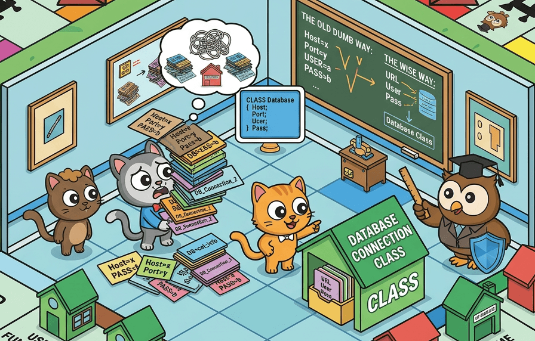

Bezpieczne wprowadzenie Introduce Parameter Object
Motywacja
Refaktoryzacja może wydawać się ryzykowna, w kodzie słabo zabezpieczonym testami jednostkowymi, dlatego ogólnie znanym zaleceniem jest wprowadzanie gęstej siatki testów. Jednak w przypadku niektórych refaktoryzacji, takich jak Introduce Parameter Object, duża ilość testów może znacznie utrudnić migrację, ponieważ w istotny sposób zmieniane są interfejsy funkcji publicznych. To może prowadzić do przypadkowego uszkodzenia wielu testów, czyli do utraty zaufania do testów.
Stąd wielu programistów może być zniechęconych do tego wzorca, jednak eksperci, tacy jak Martin Fowler i Robert C. Martin, zgadzają się, że jest to kluczowa refaktoryzacja, która może znacznie poprawić łatwość konserwacji kodu. Robert C. Martin w książce Clean Code definiuje wiele aspektów czystej funkcji, jeden z nich dotyczy liczby parametrów:
Parametry Funkcji: Idealna liczba argumentów dla funkcji to Zero. Następnie jeden, a tuż za nim dwa. Trzy argumenty powinny być unikane, gdzie to możliwe. Więcej niż trzy jest nie do zaakceptowania. W większości przypadków mogą być wyekstrahowane do klasy. --- Robert C. Martin - Clean Code: A Handbook of Agile Software Craftsmanship, 2008.
Martin Fowler w książce Refactoring definiuje zapaszek kodu (ang. Code Smell) związany ze zbyt dużą liczbą parametrów:
Data Clumps: Kępy Danych to jeden z moich ulubionych zapachów kodu. Zauważysz go, gdy po raz kolejny widzisz te same dane przekazywane razem. Dobrym przykładem są start i end w zakresie dat. Rozwiązaniem jest zastosowanie klasy Range. Często Data Clumps to wartości prymitywne, o których nikt nie myśli jako o obiekcie. --- Martin Fowler - Refactoring: Improving the Design of Existing Code, 2016.
Dlatego w tym artykule spróbuję przekonać niechętnych, jak w bezpieczny sposób wprowadzić ten wzorzec, nawet w kodzie, który ma gęstą sieć testów jednostkowych. Dalej w tym artykule będę używać praktycznego przykładu z gry planszowej Monopoly, w celu ilustracji procesu. Wprowadzanie tego wzorca przypomina trochę technikę znaną w inżynierii lądowej, nazywaną "kanałem dywersyjnym" (ang. diversion channel). Jest ona sposobem na bezpieczne prowadzenie przebudowy (ang. dry construction zone = bezpieczna strefa budowy). W czasie migracji kodu będziemy korzystać z dwóch wersji interfejsów funkcji publicznych starej i nowej, co przypomina tymczasowy kanał dywersyjny, który przekierowuje ruch z jednej trasy na drugą, podczas gdy stara trasa jest stopniowo zamykana.

Wzorzec: Introduce Parameter Object
Jak już wspomniano wcześniej, ten wzorzec jest istotnym narzędziem w arsenale refaktoryzacji, który pomaga poprawić czytelność i spójność kodu poprzez grupowanie powiązanych parametrów w jeden obiekt. Jest to szczególnie przydatne, gdy masz funkcję lub metodę, która przyjmuje wiele parametrów.
Wzorzec został wprowadzony przez Martina Fowlera. Autor zachęca aby stosować go szczególnie w sytuacjach, gdy oglądając kod widzisz funkcję/metodę, która przyjmuje kilka parametrów (więcej niż dwa), które:
- często pojawiają się razem
- należą do jednego logicznego kontekstu
- powodują, że sygnatura funkcji jest trudna do zrozumienia
- powodują powtarzającą się wieloliniową sekcję przygotowania danych w testach (sekcja: "arrange")
Opisany problem Kęp Danych wywołuje ogólną degradację jakości kodu. Rozprasza wiedzę o operacjach między różnymi modułami, co utrudnia rozwój kodu i naprawę wykrytych błędów. Wzorzec Introduce Parameter Object pomaga rozwiązać problem tego zapachu kodu, tworząc jasną granicę dla powiązanych danych i operacji/funkcji. Gdy zobaczysz funkcję, która ma takie słabości, a przy tym ma krytyczne znaczenie w Twoim projekcie, to właśnie znalazłeś dobrego kandydata na wprowadzenie tego wzorca.

Istnieje wiele innych wzorców projektowych i refaktoryzacji, które mogą pomóc w ulepszeniu kodu, jednak w tym artykule skupimy się tylko na wzorcu Introduce Parameter Object i związanym z nim zapachem Data Clumps.
Gra Monopoly - ilustracja problemu
Zilustruję powyższy problem kodu praktycznym przykładem z projektu JavaScript obsługującego cyfrową wersję gry planszowej Monopoly.
Przed rozpoczęciem refaktoryzacji projekt miał kilka funkcji, które przyjmowały od 2 do 4 powiązanych ze sobą argumentów, takich jak players, board. Równocześnie funkcje operujące na stanie gry znajdowały się w różnych plikach/modułach. Taka sytuacja powodowała, że stan gry i logika były trudne do zrozumienia i modyfikacji.
- Stan gry był rozproszony na kilka odrębnych wartości:
players- tablica obiektów graczy, z których każdy ma swoje własne właściwości, takie jak position, isBankrupt, id itp.board- tablica reprezentująca planszę, gdzie każdy element to kafelek z różnymi parametrami, takimi jak type, name, price itp.currentPlayerId- identyfikator bieżącego graczacurrentDiceRoll- wynik ostatniego rzutu kośćmi
- funkcje operujące na stanie gry były rozproszone w kilku modułach:
rollDice()- funkcja odpowiedzialna za symulację rzutu kośćmi, która była używana w wielu miejscach, ale nie była powiązana z żadnym konkretnym obiektem grycurrentPlayer(players, playerId)- funkcja, która zwracała bieżącego gracza na podstawie currentPlayerId, ale była zdefiniowana w innym module niż funkcje operujące na graczachactivePlayers(players)- funkcja, która zwracała listę aktywnych graczycountActivePlayers(players)- funkcja, która zliczała aktywnych graczynextActivePlayer(players, playerId)- funkcja, która zwracała następnego aktywnego gracza
- kluczowa logika gry zapisana w funkcjach przyjmujących różne kombinacje powyższych wartości jako argumenty:
movePlayer()- logika ruchu po planszy (tutaj pojawił się zapach Kęp Danych)processLocationRules()- reguły lądowania w nowej lokalizacji wewnątrzprocessPayRentRules()- reguły płacenia czynszu po wylądowaniu gracza na czyjejś własnościprocessBankruptcyRules()- reguły bankructwa, które sprawdzały, czy gracz jest bankrutem po każdej operacji finansowej
Początkowo główna pętla gry wyglądała tak (uproszczona dla celów ilustracyjnych, nie jest to dokładna implementacja):
const board = createBoard();
const players = createPlayers([
"Luke Skywalker",
"Darth Vader",
"Han Solo",
"Leia Organa"
]);
showIntro(players);
let player = nextActivePlayer(players, currentPlayerId);
while (player !== null) {
let doublesCount = 0;
let hasDouble = true;
while (hasDouble && doublesCount < 3 && !player.isBankrupt) {
const roll = rollDice();
movePlayer(player, board, players, roll.total);
hasDouble = roll.isDouble;
if (hasDouble) {
doublesCount++;
}
}
player = nextActivePlayer(players, currentPlayerId);
}
showSummary(players);Ta wersja działa, ale dane i funkcje przez nią używane są rozproszone. Jeśli chcesz zmienić śledzenie listy aktywnych graczy, porządek tur lub reguły dotyczące obsługi wodociągów i zakładu energetycznego, musisz dotknąć kilku miejsc na raz.
Problemy widoczne już na zewnątrz, stają się o wiele poważniejsze wewnątrz funkcji movePlayer(). Przyjmuje ona 4 parametry: player, board, players i rollTotal i zawiera dużo kluczowych reguł gry, takich jak: pójście do więzienia, sprawdzenie, czy gracz jest bankrutem, sprawdzenie, czy gracz wylądował na czyjejś własności i musi zapłacić czynsz, itp. To jest duża funkcja z wieloma odpowiedzialnościami, która nawet w aktualnym stanie była trudna do zrozumienia i modyfikacji. Wraz z rozwojem projektu w tym miejscu może być tylko gorzej. Pochopna decyzja podjęta na początku projektowania gry, czyli trzymanie stanu gry na wielu odrębnych wartościach, utrudnia wprowadzanie zmian, takich jak elastyczny system reguł gry, który spełnia regułę Otwarte-Zamknięte (ang. Open-Closed Principle) z zasad SOLID.
Komentarz architektoniczny
Powyżej wspomniałem już o zasadzie Open-Closed (OCP), ale jest jeszcze jedna ważna zasada w SOLID, która jest kluczowa dla tej refaktoryzacji, a mianowicie zasada Single Responsibility Principle (SRP).
Zasada SRP mówi, że klasa tego typu nie może być zbyt duża, a dokładniej, powinna mieć tylko jedną odpowiedzialność, czyli powinna być odpowiedzialna za tylko jeden aspekt funkcjonalności systemu. W kontekście gry Monopoly, obiekt game powinien być odpowiedzialny za zarządzanie stanem gry. W przypadku takiego obiektu bardzo łatwo jest naruszyć zasadę SRP, bo wydaje się, że obiekt gry powinien zawierać wszystkie aspekty gry, nawet komunikację z serwerem REST lub zapisywanie danych do pliku. Dobre podzielenie granicy wymaga doświadczenia i wieloletniej praktyki. Nie powinniśmy dodawać do niego nawet reguł kupowania własności czy płacenia czynszu. Zadaniami tymi powinny zająć się osobne moduły/klasy.
Poszukaj granicy separującej blisko zaprzyjaźnione wartości, a nie o "wiadrze na wszystko". Pamiętaj o kluczowej zasadzie: nie wrzucaj zbyt wiele do jednego obiektu. Jeśli granica została za mocno rozszerzona, powinniśmy odpowiedzialność klasy zawęzić, zazwyczaj dzieląc obiekt na mniejsze części. Temat ustalania granic jest bardzo ważny dla projektowania systemów i opisuje go wiele reguł, takich jak omawiana teraz zasada SRP lub inne: Separation of Concerns, czy Event Storming w Domain-Driven Design. Taki obiekt "wiadro", zawierający zbyt wiele odpowiedzialności, nazywany jest boskim obiektem (ang. God Object) i jest antywzorem projektowym.
Refaktoryzacja krok po kroku
- Tworzenie obiektu
game.- Utwórz funkcję
createGame(playerNames), która zwraca obiektgamez początkowym stanem gry, w tym tablicą graczy, planszą, bieżącym graczem i funkcjami pomocniczymi do nawigacji po stanie gry. - Upewnij się, że
createGame()jest dobrze przetestowane, aby mieć pewność, że zwraca obiekt o oczekiwanym kształcie i zachowaniu. To jest kluczowy krok, ponieważgamebędzie nową granicą dla wielu funkcji, więc ważne jest, aby był stabilny i dobrze zdefiniowanytest("createGame returns expected shape", () => { const game = createGame(["Luke", "Leia"]); expect(game.players).toHaveLength(2); expect(game.currentPlayerId).toBeNull(); expect(game.board).toBeDefined(); }); - Przejdź do kolejnego kroku, gdy masz silne testy dla
createGame().
- Utwórz funkcję
- Wprowadzenie kanału dywersyjnego.
- Stwórz
movePlayer_new()ale wewnętrznie deleguj do starej funkcji, aby zachować istniejące zachowanie. To pozwala na stopniową migrację wywołańmovePlayerbez natychmiastowego uszkadzania systemu testowego.function movePlayer_new(game) { movePlayer( game.currentPlayer(), game.board, game.players, game.currentDiceRoll.total); } - Przejdź do kolejnego kroku, gdy upewnisz się, że
movePlayer_newdziała poprawnie w jednym z testów.
- Stwórz
- Zaktualizuj testy
- Zaktualizuj testy
movePlayerdo używaniamovePlayer_new(game). Oceń rozmiar migracji testów. Jeśli migracja ma potrwać dłużej, pozostaw oba warianty testów, aby je stopniowo migrować jeden po drugim. - Często uruchamiaj testy, aby upewnić się, że one nadal przechodzą (włącz automatyczne uruchamianie testów w tzw. trybie "watch").
test("movePlayer - Obi-Wan passing Start and buys location", () => { const game = createTestGame([ // Obi-Wan starts at Pacific Avenue with $1500 { name: "Obi-Wan", position: 31 }, ]); game.currentDiceRoll = { total: 10 }; movePlayer_new(game); // Obi-Wan passes Start and lands on Mediterranean Avenue // - collects $200 for passing Start, // - buys Mediterranean Avenue, price is $60 assert.equal(game.players[0].position, 1); assert.equal(game.players[0].money, 1500 + 200 - 60); }); - Przejdź do kolejnego kroku, gdy wszystkie testy przechodzą.
- Zaktualizuj testy
- Migracja wywołań w kodzie produkcyjnym.
- Zaktualizuj wszystkie wywołania
movePlayer(player, board, players, steps)domovePlayer_new(game). Ponownie, jeśli migracja jest duża, pozostaw oba warianty i migruj je stopniowo, uruchamiając testy po każdej zmianie. - Aby ułatwić śledzenie postępów migracji, możesz zmienić nazwę starej funkcji na
movePlayer_old()aby mieć jasność, która jest aktualnie używana w kodzie produkcyjnym. - Przenieś pełną implementację procesowania ruchu gracza do funkcji
movePlayer_new(). Pozwoli to na stopniowe usuwanie odwołania do starej funkcji. - Po zakończeniu, upewnij się, że wszystkie testy przechodzą.
- Usuń starą funkcję
movePlayer_old()oraz wszystkie stare testy. - Zmień nazwę
movePlayer_new()z powrotem namovePlayer().
- Zaktualizuj wszystkie wywołania
Zmiana wszystkiego naraz byłaby ryzykowna i łatwo mogłaby doprowadzić do degradacji testów, pominięcia kluczowego scenariusza lub wprowadzenia krytycznych błędów w kodzie produkcyjnym, dlatego bezpieczniejsza ścieżka to:
- Utrzymaj stare zachowanie do samego końca migracji.
- Dodaj tymczasowy adapter, wywołujący starą funkcję.
- Przeprowadź stopniową migrację testów.
- Zwiń kod produkcyjny ostatecznej formy
movePlayer(game)
Adapter movePlayer_new to nie cel, a jedynie pomoc w migracji. Wprowadzasz go, aby utrzymać zachowanie na czas, gdy wywołujący przechodzą ze starej sygnatury funkcji na nową. Dlatego tak dobrą ilustracją tego procesu jest kanał dywersyjny. Dostajemy suchą strefę budowy (ang. dry construction zone), w której możemy bezpiecznie wprowadzać zmiany, a następnie stopniowo przenosić ruch z starej trasy (starej sygnatury funkcji) na nową (nową sygnaturę funkcji). Gdy cały ruch jest już na nowej trasie, stara trasa jest usuwana, a nowa staje się jedyną drogą do celu.
Przykład createGame i adaptera
Oto jak wygląda nowa granica projektu dla obiektu gry:
export function createGame(playerNames) {
const players = createPlayers(playerNames);
return {
currentPlayerId: null,
currentDiceRoll: null,
players,
board: createBoard(),
rollDice() {
const roll = rollDice();
this.currentDiceRoll = roll;
return roll;
},
currentPlayer() {
return this.players.find((player) => player.id === this.currentPlayerId) ?? null;
},
getActivePlayers() {
return this.players.filter((player) => !player.isBankrupt);
},
countActivePlayers() {
return this.getActivePlayers().length;
},
nextActivePlayer() {
const activePlayers = this.getActivePlayers();
if (activePlayers.length < 2) {
this.currentPlayerId = null;
return false;
}
const player = this.currentPlayer();
if (player === null) {
this.currentPlayerId = activePlayers[0].id;
} else {
const idx = activePlayers.findIndex(
(p) => p.id === player.id);
const nextIndex = (idx + 1) % activePlayers.length;
this.currentPlayerId = activePlayers[nextIndex].id;
}
return true;
},
};
}Końcowe porady
Wzorzec Introduce Parameter Object może być kosztowny przy wprowadzaniu, ale zwraca się w każdej zmianie, która przychodzi później.
Stosowanie refaktoringu to sztuka, która odróżnia dobry zespół programistów od przeciętnego. Mądry lider zespołu powinien zachęcać programistów do refaktoryzacji. Co pociąga za sobą inwestowanie czasu w silny zestaw testów jednostkowych. Brak lub za słabe testy to częsty powód unikania refaktoryzacji, co dalej prowadzi do degradacji jakości kodu oraz szybkiego gromadzenia długu technicznego. Z kolei duży dług techniczny prowadzi do spadku produktywności zespołu i jego morale, a w skrajnych przypadkach do konieczności przepisania projektu od nowa w "lepszej, wymarzonej technologii", co jest kosztowne, ryzykowne i rzadko kiedy przynosi spodziewane efekty, ponieważ ten sam zespół popełni te same błędy, a zupełnie nowy zespół będzie miał ograniczoną wiedzę dziedzinową i doświadczenie.
Z drugiej strony projektowanie "na zapas" w praktyce jest bardzo trudne, a nawet niemożliwe. W praktyce, gdy projektujemy system, nie mamy pełnej wiedzy o jego przyszłych wymaganiach, a nawet jeśli mamy, to wymagania te mogą się zmieniać w czasie. Dlatego ważne jest, aby mieć narzędzia i techniki do bezpiecznego wprowadzania zmian, które mają pomóc w poprawie jakości kodu i ułatwieniu jego utrzymania w dłuższej perspektywie.
Refaktoryzacja to nie sztywne przepisy, ale raczej praktyczne wskazówki, które wymagają adaptacji i dopasowania. Mają one pomagać programistom podejmować świadome decyzje podczas przekształcania słabego kodu. W przypadku Introduce Parameter Object, kluczową zasadą jest unikanie zbyt dużej granicy. Nie próbuj przenosić całego stanu gry do jednego obiektu game od razu, ponieważ może to prowadzić do stworzenia boskiego obiektu (ang. God Object), który jest trudny do zrozumienia i utrzymania.
Gdy zmiany kodu wyglądają ryzykownie, nie zaczynaj od przeprojektowania całego systemu. Zamiast tego użyj tego drzewa decyzyjnego:
- Czy masz silne testy jednostkowe? Jeśli nie, najpierw je zbuduj.
- Czy możesz wprowadzić tymczasowy adapter, który deleguje do starej funkcji? Jeśli nie, zakres jest zbyt duży — podziel go dalej.
- Czy możesz migrować testy jeden po drugim? Jeśli nie, zakres jest zbyt duży — podziel go dalej.
Jeśli osiągniesz krok 3 z odpowiedziami "tak" to możesz bezpiecznie przystąpić do refaktoryzacji.
Odnośniki
- Martin Fowler - Refactoring: Improving the Design of Existing Code. https://martinfowler.com/books/refactoring.html
- Robert C. Martin - Clean Code: A Handbook of Agile Software Craftsmanship. https://www.goodreads.com/book/show/3735293-clean-code
- Martin Fowler - Data Clump Code Smell. https://martinfowler.com/bliki/DataClump.html
- Zasady SOLID - Wikipedia PL. https://pl.wikipedia.org/wiki/SOLID
- Refactoring Guru - Introduce Parameter Object. https://refactoring.guru/introduce-parameter-object/
- Refactoring Guru - Data Clumps. https://refactoring.guru/smells/data-clumps/
- Refactoring Guru - Large Class. https://refactoring.guru/smells/large-class